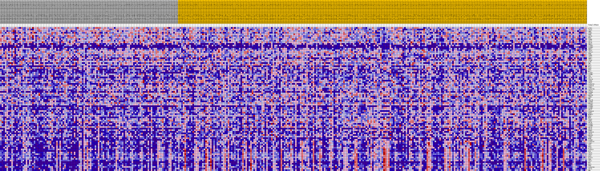
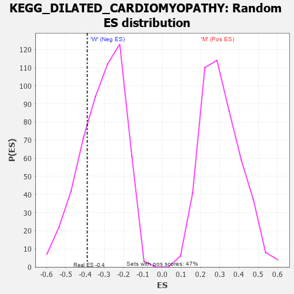

Profile of the Running ES Score & Positions of GeneSet Members on the Rank Ordered List
| Dataset | MUC16.MUC16.cls#M_versus_W.MUC16.cls#M_versus_W_repos |
| Phenotype | MUC16.cls#M_versus_W_repos |
| Upregulated in class | W |
| GeneSet | KEGG_DILATED_CARDIOMYOPATHY |
| Enrichment Score (ES) | -0.3885134 |
| Normalized Enrichment Score (NES) | -1.2522178 |
| Nominal p-value | 0.24672897 |
| FDR q-value | 1.0 |
| FWER p-Value | 0.969 |
| PROBE | DESCRIPTION (from dataset) | GENE SYMBOL | GENE_TITLE | RANK IN GENE LIST | RANK METRIC SCORE | RUNNING ES | CORE ENRICHMENT | |
|---|---|---|---|---|---|---|---|---|
| 1 | ACTG1 | na | 124 | 0.226 | 0.0235 | No | ||
| 2 | ITGA6 | na | 446 | 0.183 | 0.0385 | No | ||
| 3 | LMNA | na | 1426 | 0.133 | 0.0360 | No | ||
| 4 | ITGB7 | na | 1803 | 0.122 | 0.0431 | No | ||
| 5 | TPM3 | na | 1954 | 0.118 | 0.0537 | No | ||
| 6 | ADCY3 | na | 2317 | 0.109 | 0.0596 | No | ||
| 7 | PRKX | na | 2534 | 0.105 | 0.0677 | No | ||
| 8 | ITGB4 | na | 2567 | 0.104 | 0.0789 | No | ||
| 9 | ADCY7 | na | 3090 | 0.095 | 0.0803 | No | ||
| 10 | ADCY6 | na | 3355 | 0.091 | 0.0859 | No | ||
| 11 | TNNI3 | na | 3515 | 0.089 | 0.0931 | No | ||
| 12 | CACNG5 | na | 3791 | 0.085 | 0.0977 | No | ||
| 13 | CACNG3 | na | 4329 | 0.077 | 0.0968 | No | ||
| 14 | TNNT2 | na | 4874 | 0.071 | 0.0950 | No | ||
| 15 | ITGA3 | na | 5481 | 0.064 | 0.0913 | No | ||
| 16 | ATP2A2 | na | 6053 | 0.058 | 0.0876 | No | ||
| 17 | TPM4 | na | 6283 | 0.056 | 0.0898 | No | ||
| 18 | ITGB8 | na | 8068 | 0.041 | 0.0621 | No | ||
| 19 | ITGA2 | na | 8372 | 0.038 | 0.0610 | No | ||
| 20 | TNNC1 | na | 9386 | 0.030 | 0.0460 | No | ||
| 21 | ITGA4 | na | 10043 | 0.024 | 0.0369 | No | ||
| 22 | ACTB | na | 10388 | 0.022 | 0.0331 | No | ||
| 23 | TNF | na | 11311 | 0.015 | 0.0182 | No | ||
| 24 | DAG1 | na | 11369 | 0.015 | 0.0189 | No | ||
| 25 | MYL3 | na | 11515 | 0.014 | 0.0179 | No | ||
| 26 | SGCB | na | 12264 | 0.009 | 0.0053 | No | ||
| 27 | RYR2 | na | 12678 | 0.007 | -0.0014 | No | ||
| 28 | MYL2 | na | 12928 | 0.005 | -0.0053 | No | ||
| 29 | CACNG2 | na | 13435 | 0.002 | -0.0143 | No | ||
| 30 | CACNB1 | na | 13616 | 0.001 | -0.0175 | No | ||
| 31 | TTN | na | 15101 | -0.000 | -0.0444 | No | ||
| 32 | ADCY1 | na | 15524 | -0.002 | -0.0517 | No | ||
| 33 | ITGA10 | na | 16276 | -0.006 | -0.0646 | No | ||
| 34 | ITGB6 | na | 17054 | -0.011 | -0.0775 | No | ||
| 35 | ITGAV | na | 18634 | -0.019 | -0.1039 | No | ||
| 36 | CACNA2D2 | na | 19116 | -0.021 | -0.1103 | No | ||
| 37 | CACNA1D | na | 19330 | -0.022 | -0.1116 | No | ||
| 38 | ITGB1 | na | 19692 | -0.024 | -0.1154 | No | ||
| 39 | CACNA2D4 | na | 21832 | -0.033 | -0.1504 | No | ||
| 40 | ITGA11 | na | 22015 | -0.034 | -0.1498 | No | ||
| 41 | CACNG4 | na | 22112 | -0.034 | -0.1476 | No | ||
| 42 | ITGB5 | na | 22239 | -0.035 | -0.1459 | No | ||
| 43 | PRKACB | na | 25430 | -0.048 | -0.1983 | No | ||
| 44 | ADRB1 | na | 25822 | -0.049 | -0.1998 | No | ||
| 45 | EMD | na | 25969 | -0.050 | -0.1967 | No | ||
| 46 | ITGA2B | na | 26652 | -0.052 | -0.2031 | No | ||
| 47 | CACNG8 | na | 27031 | -0.054 | -0.2039 | No | ||
| 48 | PRKACA | na | 27466 | -0.055 | -0.2054 | No | ||
| 49 | CACNB3 | na | 28554 | -0.059 | -0.2184 | No | ||
| 50 | CACNG6 | na | 28812 | -0.060 | -0.2162 | No | ||
| 51 | CACNB2 | na | 29448 | -0.062 | -0.2206 | No | ||
| 52 | ADCY2 | na | 30322 | -0.065 | -0.2290 | No | ||
| 53 | CACNA1F | na | 31466 | -0.068 | -0.2420 | No | ||
| 54 | TGFB2 | na | 34661 | -0.079 | -0.2909 | No | ||
| 55 | MYBPC3 | na | 35832 | -0.082 | -0.3027 | No | ||
| 56 | GNAS | na | 38550 | -0.091 | -0.3416 | No | ||
| 57 | MYH7 | na | 38929 | -0.092 | -0.3380 | No | ||
| 58 | ITGA5 | na | 39004 | -0.092 | -0.3288 | No | ||
| 59 | TGFB1 | na | 39139 | -0.093 | -0.3207 | No | ||
| 60 | ADCY4 | na | 39739 | -0.095 | -0.3208 | No | ||
| 61 | CACNG1 | na | 41234 | -0.100 | -0.3365 | No | ||
| 62 | CACNB4 | na | 43002 | -0.106 | -0.3564 | No | ||
| 63 | ADCY9 | na | 43334 | -0.107 | -0.3502 | No | ||
| 64 | ADCY8 | na | 45052 | -0.114 | -0.3683 | No | ||
| 65 | TGFB3 | na | 45500 | -0.115 | -0.3633 | No | ||
| 66 | CACNA1S | na | 46425 | -0.120 | -0.3664 | No | ||
| 67 | ITGA8 | na | 47015 | -0.122 | -0.3632 | No | ||
| 68 | PRKACG | na | 47650 | -0.126 | -0.3603 | No | ||
| 69 | ITGB3 | na | 48809 | -0.132 | -0.3663 | No | ||
| 70 | MYH6 | na | 49039 | -0.133 | -0.3552 | No | ||
| 71 | CACNG7 | na | 50876 | -0.146 | -0.3719 | Yes | ||
| 72 | CACNA2D1 | na | 51233 | -0.149 | -0.3613 | Yes | ||
| 73 | LAMA2 | na | 52158 | -0.159 | -0.3600 | Yes | ||
| 74 | IGF1 | na | 52481 | -0.163 | -0.3473 | Yes | ||
| 75 | SGCG | na | 52986 | -0.170 | -0.3371 | Yes | ||
| 76 | ACTC1 | na | 53389 | -0.177 | -0.3242 | Yes | ||
| 77 | CACNA1C | na | 53758 | -0.186 | -0.3097 | Yes | ||
| 78 | PLN | na | 54483 | -0.207 | -0.2992 | Yes | ||
| 79 | ITGA9 | na | 54702 | -0.218 | -0.2783 | Yes | ||
| 80 | ITGA1 | na | 54730 | -0.220 | -0.2538 | Yes | ||
| 81 | SGCD | na | 54739 | -0.220 | -0.2289 | Yes | ||
| 82 | SLC8A1 | na | 54748 | -0.221 | -0.2039 | Yes | ||
| 83 | TPM1 | na | 54765 | -0.222 | -0.1789 | Yes | ||
| 84 | ITGA7 | na | 54800 | -0.224 | -0.1540 | Yes | ||
| 85 | DES | na | 54823 | -0.225 | -0.1288 | Yes | ||
| 86 | SGCA | na | 54832 | -0.225 | -0.1033 | Yes | ||
| 87 | TPM2 | na | 54924 | -0.231 | -0.0787 | Yes | ||
| 88 | CACNA2D3 | na | 55108 | -0.248 | -0.0538 | Yes | ||
| 89 | ADCY5 | na | 55113 | -0.248 | -0.0256 | Yes | ||
| 90 | DMD | na | 55117 | -0.249 | 0.0027 | Yes |

